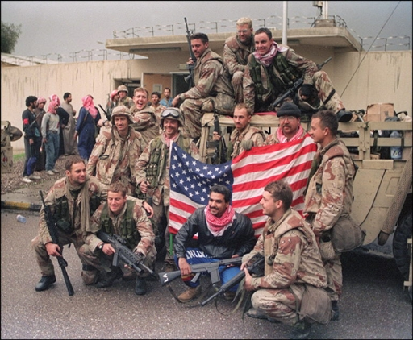

Ici on va voir des exemples d'utilisation du projet HAARP dans le cadre du contrôle de la pensée.
 Du 2 aôut 1990 au 28 février 1991, la guerre du Golfe a causée la mort de plus de 100 000 soldats et de 1 000 civils. Pendant cette guerre, un grand nombre de soldats Irakiens se sont rendus aux forces ennemies sans combattre et sans aucune raison. Beaucoup de scientifiques aurait trouvés une corrélation entre cet événement et le projet HAARP, selon eux les États-Unis aurait utilisé le projet HAARP pour faire en sorte que les irakiens se rendent pour gagner plus facilement. Bien sûr ce ne fut pas le cas de tous les soldats irakiens, car les États-Unis ne veulent pas trop attirer l'attention sur ces faits inéxpliqués. Les soldats américains eux-mêmes n'était pas informés de l'utilisation de cette arme, car moins il y aura de personne au courant mieux ce sera.